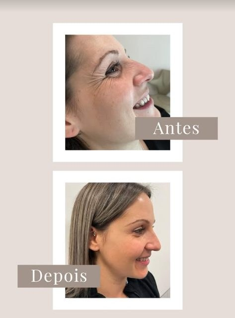
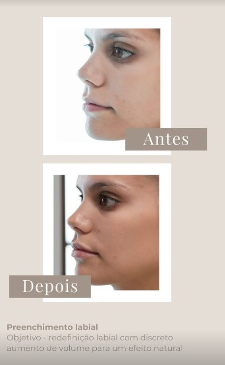
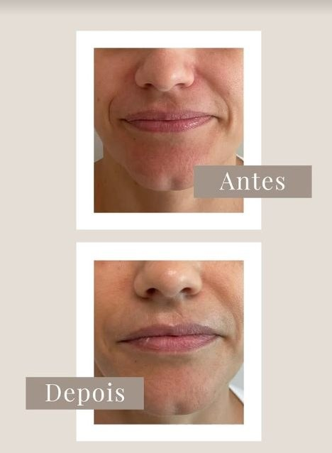

Botox Full Face
Suavização global das rugas de expressão, preservando a mímica natural do rosto.
Dra. Joana Bravo
Harmonização facial e corporal em Braga — tratamentos personalizados pela Dra. Joana Bravo
Braga · Portugal
Sobre
Médica Estética | Clínica Geral
Formada pela Faculdade de Medicina da Universidade do Porto, com especialização nas Universidades de Santiago de Compostela e Barcelona. Dedicada a realçar a beleza natural de cada pessoa com técnica, segurança e resultados naturais.
Serviços
Cada plano é desenhado para a sua anatomia e para os seus objectivos, sempre com uma abordagem médica e resultados discretos.
Suavização global das rugas de expressão, preservando a mímica natural do rosto.
Plano individualizado que equilibra proporções e devolve harmonia às linhas do rosto.
Redefinição do contorno com aumento discreto de volume para um resultado natural.
Lifting sem cirurgia por ultrassons microfocados, com firmeza progressiva da pele.
Remodelação e melhoria da qualidade da pele com protocolos corporais personalizados.
Tratamento de olheiras e do olhar cansado, com um resultado descansado e luminoso.
Antes e Depois

Diminuição das rugas de expressão e melhoria da qualidade da pele.

Redefinição labial com discreto aumento de volume para um efeito natural.

Suavização dos sulcos nasogenianos e das linhas de marionete.
Resultados reais, beleza natural
Testemunhos
Senti-me acompanhada do início ao fim. O resultado é discreto, exatamente como eu queria — ninguém diz que fiz algo, apenas que estou bem.
A Dra. Joana explicou-me cada passo com muita calma e segurança. Confiança total, e um resultado muito natural nos lábios.
Um olhar completamente renovado. Consultório impecável e um cuidado com o detalhe que faz toda a diferença.
Sobre a Dra.
Licenciatura
Universidade do Porto
Especialização
Universidade de Santiago de Compostela
Especialização
Universidade de Barcelona
Actualmente
Braga, Portugal
Localização